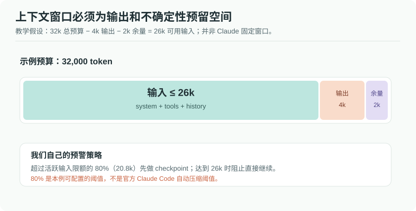
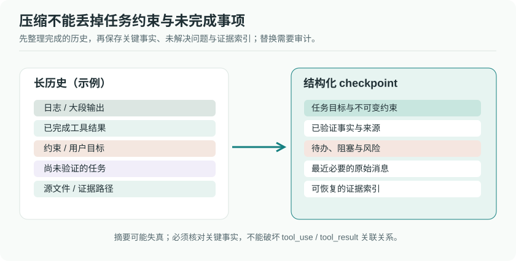

上下文预算、压缩与可恢复的任务检查点
准确区分 Token Counting、Prompt Caching、Context Editing 与 Compaction，并通过可测预算策略和结构化检查点保护长期任务的关键事实。
为什么长上下文不是无限记忆
一个 Coding Agent 会不断积累用户任务、项目约定、模型回复、文件内容、测试日志和工具错误。上下文窗口是有限的，输入中包含的所有信息并不具有同样的价值。旧的测试日志可能占据大量 token，却无法代表当前文件状态；但被压掉的一条权限约束可能让任务产生错误操作。
因此上下文管理要同时解决两类问题：容量预算（请求能否放进窗口）与语义保真（压缩后哪些事实仍被保留）。后者无法只用压缩率衡量。
先把窗口当预算，而不是越用越满
模型的上下文长度与实际可用输入受模型、工具定义、输出上限和平台设置影响。教学规划时，把总窗口拆成输入、预留输出与安全余量：

真正计算输入 token 应调用对应平台的 Token Counting API，并将系统提示、工具定义与消息都纳入输入；len(text) / 4 之类的粗略估算不能作为拒绝或压缩决策的唯一依据。
三类方法：清理、保留与语义压缩
| 方法 | 保留什么 | 主要风险 |
|---|---|---|
| 裁剪旧工具结果 | 重要结果摘要与可恢复引用 | 丢掉错误证据与上下文 |
| 服务端 Compaction | 由服务端生成摘要，按所选模式替换旧历史 | 摘要不完整，能力依赖模型/API |
| 客户端 checkpoint | 目标、约束、已验证事实、未完成项、出处 | 维护成本和人工校验工作 |
Claude Platform 文档把服务端 Compaction 分成按需和阈值触发等方式，并单独提供 Context Editing 清理策略。这些功能不是 Claude Code 产品“固定五阶段管线”的直接证据。实现条件与 API 形状需要按官方版本查证。
压缩时哪些信息不能丢

一个最小 checkpoint 至少应包括：当前目标、不可改变的用户约束、已验证事实及来源、尚未完成的任务、参考文件/版本、尚存疑问。对于工具调用，不能在消息历史中留下孤立的 tool_use，而删除与其关联的 tool_result；压缩应在完整消息边界进行。
{
"goal": "Fix parser regression",
"constraints": ["Do not modify production data"],
"verified": ["Failure reproduced in test_parser.py"],
"unfinished": ["Patch parser", "Run focused tests"],
"references": ["src/parser.py", "tests/test_parser.py"],
"open_questions": ["How should Unicode input behave?"]
}官方服务端压缩与自建摘要不要混为一谈
Claude Platform 支持面向长对话的 Compaction：服务端可以生成摘要块，并用相应的历史替换规则继续对话。按需压缩由调用方决定何时请求；阈值模式由 API 在达到配置条件时触发。两者可能有不同的版本门槛、Beta 参数与支持平台。
在自建 Harness 中，也可以先完成工具回合，再用模型生成摘要，验证后替换旧历史。但不能把自己定义的 80% 阈值、五步整理流程或摘要质量归因于 Claude Code 私有实现。
缓存不是压缩
Prompt Cache 复用已缓存前缀，主要改变成本与延迟。它不会自动减少模型在本次请求中占用的上下文容量；应与 Context Editing、Compaction 分开解释。
实现一个离线可测的预算决策器
本仓库 examples/context_budget.py 不伪造 tokenizer，也不自动调用模型。输入可以来自官方 Token Counting API 的实际输入 token 值；预算、预留和触发比例完全由应用配置。
from context_budget import Budget
b = Budget(
context_window=32_000,
reserved_output=4_000,
headroom=2_000,
checkpoint_fraction=0.8,
)
assert b.active_input_limit == 26_000
assert b.decide(10_000) == "continue"
assert b.decide(21_000) == "checkpoint"
assert b.decide(26_000) == "block"当决策为 checkpoint 时，只产生“准备复审并整理上下文”的信号；不会声称系统已经产生正确摘要。若返回 block，调用方应先清理或压缩历史，再重新计数。
失真、隐私与回滚场景
摘要可能把失败的测试写成通过、忘记重要否定条件、把临时路径当成最终产物，或抹掉某次工具调用的上下文。补救方法是把关键任务状态保存在外部可审计结构中，保留源文件/日志引用，必要时重新读取原始证据。
遇到敏感数据时，不应为了“压缩方便”把密钥或隐私内容写入新的 checkpoint。要设计保留期限、访问范围与清理策略；不同平台对存储和保留的规定需要另外核对。
constraints 并解释为什么该 checkpoint 应拒绝。用 python3 -m unittest discover -s examples -p 'test_*.py' 验证。参考资料与事实边界
- Claude Platform Compaction Overview — 按需压缩、阈值压缩与客户端摘要的区分
- Claude Platform Context Editing — 旧工具结果或思考块清理
- Claude Platform Token Counting — 按具体模型估计输入 token
- Claude Platform Context Windows — 上下文容量和缓存与窗口的区别
- Claude Platform Prompt Caching — 缓存 token 不是上下文压缩
示例 32k / 80% 仅为方便独立重现的教学参数；不是 Claude Code 固定内部阈值，也不声称模拟官方服务端压缩的内容质量。